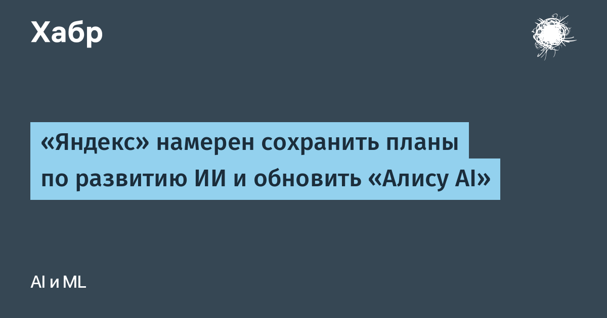

Дмитрий Масюк, директор бизнес-группы поисковых сервисов и ИИ «Яндекса», в разговоре с РБК назвал искусственный интеллект главным стратегическим направлением компании и пообещал «ускорять внедрение ИИ в продукты и сервисы». Конкретика с цифрами: число ежедневных активных пользователей приложения «Алиса AI» выросло на 14% за месяц, а «в ближайшие несколько недель» компания представит масштабное обновление ассистента, которое «значительно расширит его возможности». Отдельного официального пресс-релиза с описанием обновления пока нет — это интервью-заявление, так что состав нововведений остаётся интригой.
По данным Mediascope за сентябрь, «Алиса AI» стала самым популярным ИИ-сервисом в России: 59 млн пользователей за месяц, или 48% населения старше 12 лет. Месячный охват всех ИИ-сервисов в стране достиг 55% и за год вырос более чем вдвое. Правда, учтены только сайты и мобильные приложения — чат-боты в мессенджерах и ИИ-ответы в поиске в статистику не попали.
Заявление прозвучало на фоне восстановления инфраструктуры после атак на три дата-центра «Яндекса» в Рязанской, Калужской и Владимирской областях 8-11 октября. Были повреждены серверные мощности, а пользователи несколько дней наблюдали сбои в «Алисе», «Поиске», «Картах» и «Такси». Устойчивость ИИ-инфраструктуры к физическим атакам — теперь, кажется, такой же продуктовый показатель, как и качество модели.
Показательна сама связка: компания, чьи дата-центры лежали три дня, публично подтверждает прежние ИИ-планы и обещает крупный релиз запуск именно сейчас — видно, что ставка на ассистента как вход в экосистему только крепнет. Для рынка это сигнал, что конкуренция ИИ-ассистентов в рунете входит в фазу регулярных мажорных обновлений, а не разовых запусков.